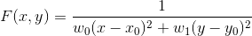

1 问题分析
- 观众的舒适度涵盖为听觉舒适度与视觉舒适度
- 影响视觉舒适度的因素有以下两点
- 观众眼睛与屏幕上下边的夹角
- 观众的眼睛与屏幕两侧的夹角
- 观众看到屏幕上边需上仰头部的角度
- 视觉焦点的活动范围即荧幕顶端视线与水平视线角度
- 可以改变以提高观众舒适度的因素有
- 观众的座位
1.1 哪个座位能获得最大的视觉舒适度
- 尽量提高观众眼睛与屏幕上下边的夹角
- 观众眼睛与屏幕两侧的夹角大于等于36度
- 观众看到屏幕上边需上仰头部的角度不超过30度
1.2 哪一些座位能够同时兼顾视觉舒适度与听觉舒适度
1.3 在考虑到视觉焦点活动范围的情况下，能获取最佳舒适度的座位
1.4 电影院该如何设计地板线、影院第一排座位距离屏幕等因素，来提高观众满意度
2 基本假设
- 所有的观众眼睛到地面的距离都相同
- 将座位视为质点
- 观众的最终视力与最终听觉不影响观影舒适度
- 从上往下看屏幕与座位构成的凸包是一个长方形
- 任一座位除位置之外不特殊
- 前一排的观众不会遮挡后一排观众的视线
3 符号说明
- H 为屏幕的高度
- W 为屏幕的宽度
- h 为屏幕底部距离地面的高度
- d 为第一排座位距离屏幕的水平距离
- α 为座椅所在地面与水平面所成夹角
- h 为眼睛距离座椅所在地面的高度
- x 为观众座位的行数
- y 为观众座位的列数
- θ 为观众眼睛与屏幕上下边的夹角
- β 为观众看到屏幕上边所需要仰头的夹角
- D 为每一行座位之间的水平间距
- w 为座位的宽度
- A 为所有座位的集合
4 模型建立
4.1 问题一
- 若以屏幕左侧边所在直线与房间的地面所在的直线的交点为原点O，垂直屏幕地板线为X轴，屏幕所在直线为Y轴，建立平面直角坐标系XOY。
- 则可在该平面直角坐标系中得到
- 观众眼睛的坐标
- 观众眼睛到屏幕上下边的夹角的余弦值
- 观众看到屏幕上边需上仰头部的角度的正切值
- 若以屏幕所在墙壁底部的直线为Z轴，在水平面上相交垂直于屏幕左侧边的直线为X轴，其交点为原点O，建立平面直角坐标系XOZ。
- 则可在该平面直角坐标系中得到
- 观众眼睛的坐标
- 观众眼睛与屏幕两侧的夹角的余弦值
- 即得约束条件下的最优化问题
4.2 问题二
- 考虑到电影院的音响布置方式以及音响设备各不相同，所以不从音响的位置考虑这个问题。
- 院线的电影院近乎拥有一样的配置，尽管各大院线采用不同的音响配置，但是他们配置音响的目的都在于使观众尽可能的体验到最好的音响体验。
- 基于上述情况，只需要考虑影厅每个座位的使用次数，即可近似认为使用次数最高的位置为音响最佳的位置。
- 可以认为，越接近最佳视觉感受位置的座位可以获得越好的听觉体验，在这里引入牵引址的概念。
- 令最佳位置为
- 得牵引力，其中w0与w1为行与列方向上的权重来平衡作为宽度与长度的不同, λ负责牵引力在目标函数中的权重问题，其大小需要训练获得
- 更新最优化问题
- 通过找到问题一中约束条件的边界，可以找到满足约束条件的所有的座位。
- 计算满足条件的座位的目标函数值，对这些值进行聚类，例如k-means，其中k为2，与最佳座位在同一类中的所有座位，即为黄金座位。
4.3 问题三
- 问题一的解答以满足到荧幕顶端视线与水平视线角度应小于35°的条件。
4.4 问题四
- 之前的目标函数体现的是单一观众根据其位置的满意程度。
- 而从影院的角度考虑，应该提升总体观众的体验。
- 由于影院每个座位的使用率不同，有些座位大部分时候没有人使用，因此，它们对求解最优解的帮助很小，因此，引入权重p
- 其中p可以是一周内影厅每个座位的使用次数满足的二维正态分布
- 从而更新目标函数
- 容易得到，a是影响观影体验较为显著的因素
- 通过比较不同的a下的观众舒适度，可以发现，a与用户体验成正比，因此，影厅应该使a为能够接受的最大角度，其中，制约因素如同重力影响。
5 模型推广
- 模型中假设人眼的视力都足够好。
- 但是实际上，有一部分人的视力使得他们在影厅的某些位置上不能获得正常的观影体验，
- 而且，佩戴眼镜也会影响例如观影者视觉焦点的移动情况。而人们近视程度（例如近视度数）满足正态分布。而根据不同近视程度对各项属性的影响，可以得出各项属性的正态分布。
- 模型中假设影厅的座位每列每行互相平行，但是实际上，每一行座位可以是圆弧形，这使得前排座位中间部分的人们更加靠后以获得更大的视角，后排两边的人数更靠前以获得更大的视角。
Author: Li Jiajie
Created: 2017-03-29 Wed 09:02
Validate